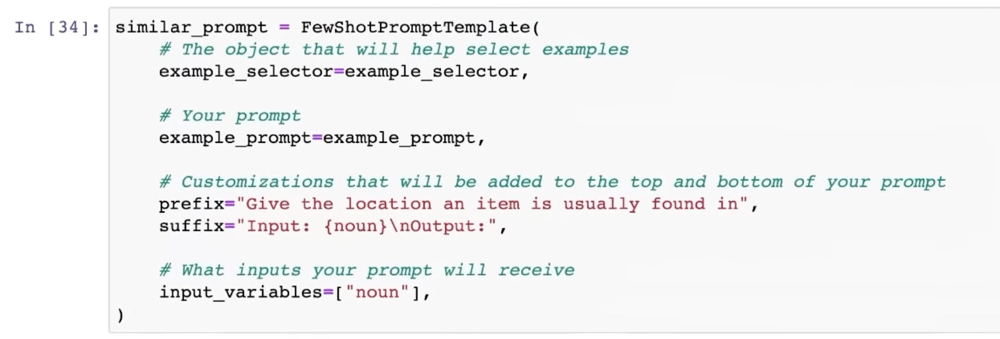
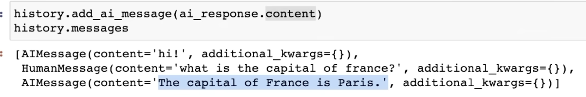
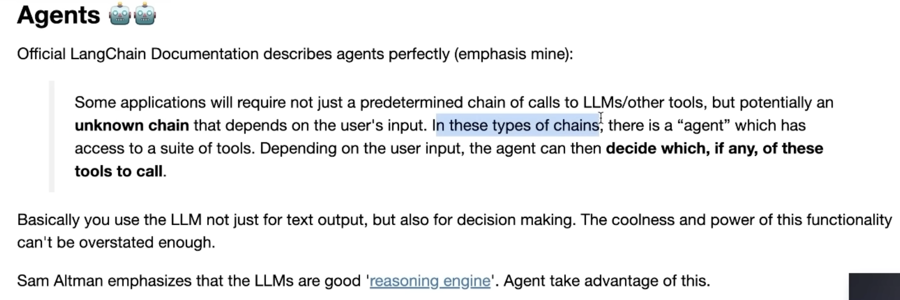

[TOC]
- Title: Langchain Use Cases 2023
- Review Date: Sat, Aug 26, 2023
- url: https://python.langchain.com/docs/get_started/quickstart
Langchain quickstart
- The core building block of LangChain applications is the LLMChain. This combines three things:
- LLM: The language model is the core reasoning engine here. In order to work with LangChain, you need to understand the different types of language models and how to work with them.
- Prompt Templates: This provides instructions to the language model. This controls what the language model outputs, so understanding how to construct prompts and different prompting strategies is crucial.
- Output Parsers: These translate the raw response from the LLM to a more workable format, making it easy to use the output downstream.
PromptTemplate
- modify prompt format easily
Chains: Combine LLMs and prompts in multi-step workflows
|
|
Agents: dynamically call chains based on user input
|
|
we can connect Google AI with ChatGPT
- we load language model, some tools to use and finally initialise an agent with
- the tools
- the language model
- the type of agent we want to use
memory: add state to chains and agents
- conversation chain, it will save all the previous conversation.
Langchain Schema
Chat Messages
- like text, but specified with a message type (System, Human and AI)
- System, helpful background context that tell the AI what to do
- Human, messages that are intended to represent the user
- AI - messages that show what the AI responded with
Document
- load documents to language model
Langchain model
Language model
- text in text out model
Chat model
- a model takes a series of messages and returns a message output
- the memory is explicitly shown in chat schema
Text embedding model
- change your text into a vector
- FAISS can be used as a retriever to get relevant documents
Prompt
- prompt template: generate prompts based on the combination of user input (i.e., put place holders)
example selector
- an easy way to select from a series of examples that allows for dynamically placing in-context information into your prompt
SemanticSimilarityExampleSelector
- we need a VectorStore class that is used to store the embeddings and do similarity check
- FAISS is the default

Output Parsers
- a helpful way to format the output of a model. Usually used for structured output
- two big concepts
- Format instructions - A autogenerated prompt that tells LLM how to format its response based off your desired result
- Parser - A method which will extract output into a desired structure (usually json)
Indexes – Structuring documents to LLMs
Document loaders
- load documents from online source
Text splitter
- often times your document is too long for your LLM, you need to split it into chunks
- Text splitters help with this
Memory
- a common one is chathistory
from langchain.memory import ChatMessageHistory

Chains
- combine different LLMs calls and output
Simple sequential chain
- decompose the task into each step
- feed the output of previous LLM to the following prompt
Summarisation chain
- map reduce or different types of chain type
Agents

- an agent is the language model that drives decision making
- agents are making automatic decisions
Extraction
- extraction is the term for describing extract useful information from natural language information and parse it into structured format
|
|
- Instead of parsing it into JSON, we can use Kor library to edit useful structured format
- https://eyurtsev.github.io/kor/index.html
Question Answering
- sources
- allows you to return the source document that is essential for the output.
|
|
NL Info to PDDL configs
-
a Question-Answering case (predefine each statement chunk in PDDL) -> an Extraction case (from NL info to each specific statement) -> a Structured Parser and Autofix case <-loop-> send to planning domain api
-
possible LLM
- https://huggingface.co/meta-llama/Llama-2-70b-chat-hf
- openai chat
- llama 2 variant https://huggingface.co/garage-bAInd/Platypus2-70B-instruct
-
Question Answering: https://python.langchain.com/docs/use_cases/question_answering/
-
Extraction: https://python.langchain.com/docs/use_cases/extraction